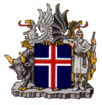

|  | The Republic of Iceland |
Iceland was settled in 874 AD. The first settler was Ingólfur Arnarson, who settled in Reykjavík. Many of the early settlers of Iceland were small lords and kings from Norway who were fleeing the tyrrany of Harald the Fairhaired who wanted to unify Norway under one king, namely himself. Some of these early settlers were great seafarers and in 982 one of them, Eiríkur Rauði discovered Greenland (so named to attract settlers), and in the year 1000 his son Leifur Heppni discovered the American continent which he named Vínland.
Because of their flight from oppression the Icelandic settlers did not form any central government for their new country. They instead relied on a group of equally powerful lords, the so-called goðar to regulate their domains, and to regularly meet to solve major problems. These meetings of the goðar were called þings.
In the year 930 the settlers established their central parliment or þing. It was given the name Alþing which simply means the central parliment. The parliment still convenes today and is believed to be the world's oldest national assembly. Up until 1798 the Alþing convened at Þingvellir which can be seen on the picture above. One of the major decisions to be made there was made in the year 1000 when, after hearing both sides of the story, the Alþing voted to adopt Christianity as the Icelandic religion.
In 1262 a the number of people that had the status of goði had been greatly reduced, and therefore each goði was far more powerful. Then, in order to claim all control for himself, one of the goðis made a pact with the Norwegian king, that gave the king limited influence in exchange for his support. This was the end of Iceland's early independance and the beginning of nearly seven centuries of foreign control.
Iceland was to begin with under the Norwegian king, then later on, because of wars and coalitions in Scandinavia, in 1381 it fell under the Danish king. Under the rule of the Danish monarchy, Iceland suffered greatly. In the year 1550 Iceland was forced to disown Catholisism, which had been its Christian faith, and adopt Lutheranism, which, being a state religion, gave the Danish monarch greater power. Due to poor harvests, epidemics, the oppression of the Danish government, which enforced, among other things, a trade monopoly with Iceland, and volcanic eruptions, the greatest of which in the recorded history of mankind occurred in Iceland in 1783, the population of Iceland in the year 1800 was only 38000, half of what it was in the year 1100.
In the 19th century a long battle for independence was fought with the Danish government, mostly in the political arena of Copenhagen. Iceland's most prominent champion was Jón Sigurðsson, a national hero, who was both a statesman and a scholar. Although Iceland kept gaining ground from the late 19th century, it was not until the 17th of June, 1944, that Iceland regained its full independence and established the current Republic of Iceland.
Iceland is a modern welfare state, in the spirit of its Scandinavian neighbours and cousins. Everybody reaps the benifits of free health care, free education (from the preschool to the University level), guaranteed pension and high standards of living, while paying the price of a near 50% income tax. Illiteracy, poverty, prostitution and violent crime are virtually unknown in modern Iceland, and the nation is one of the wealthiest in the world, with regard to its size. The main industries are fishing, tourism, geo-thermal industries (e.g. Bláa lónið) and increasingly high-tech industries.
{kind=link}
{kind=link}
{kind=link}
{kind=link}